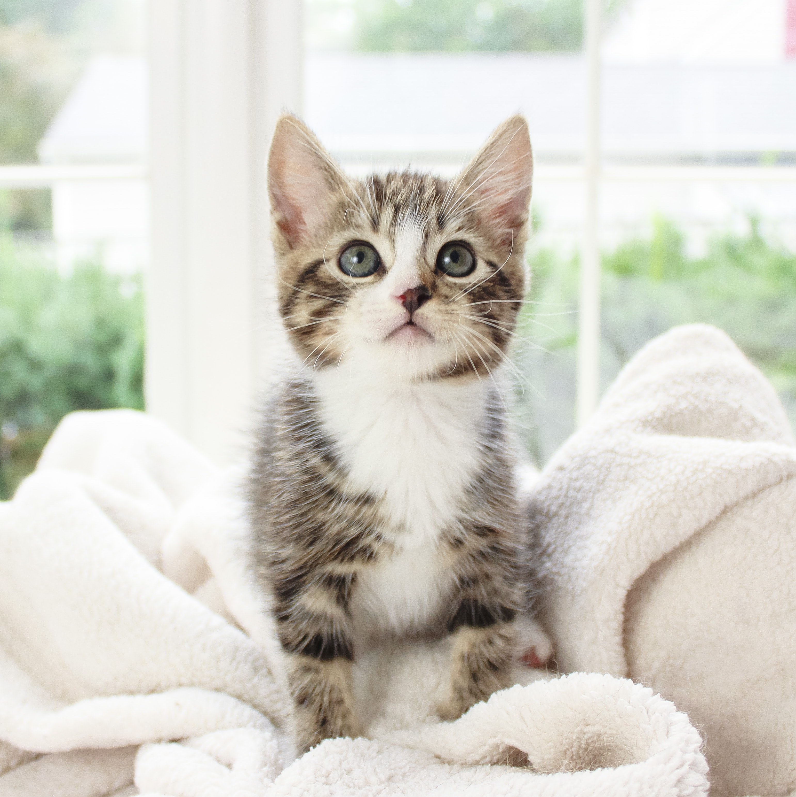
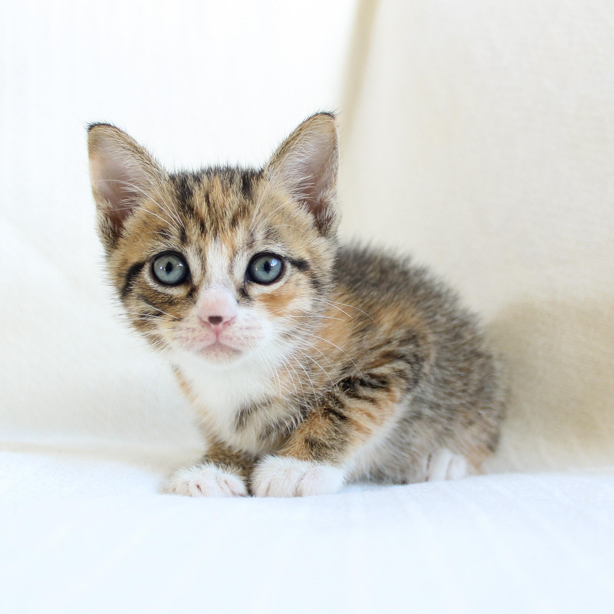

How much people who work on the Internet like cats

Internet god Kashadin has a great loeve for cats,
he said he first wrote the code for cats, he controls the daily food,
habits and so on through the software, the cat on the picture is Kakus,
he is 6 years old. Kashadin has written a lot of software for his cats,
and many people believe that his famous softwar Coffee Cat comes from the creativity of cats.
He thinks everything he does for the cat is worth it. When he was 45 years old, he was inspired by the cat. He bought 10,000 computer CPUs to build a neural network. Then the cat's brain was built. Data acquisition through MRI allowed them to produce analysis for mental dependence.
Internet products generated because of cats

The world's most famous clothing online
sales platform Catcool comes from two top
Italian software engineers. They were too fond of cats,
but they found it impossible to find the right clothes for their
cats when it was winter time. So they created the Cat Cool platform
for their cats. Today Catcool is one of the top clothes selling platforms
in the world and it is a delightful idea that originated because of cats.
This clothing website ended up earning 100 million per day. Various media outlets covered this story. And many people on social media were thinking about it. Why do cats possess so much magic that so many people are willing to sacrifice their lives and money for company. Let's end this time with a song about flying.